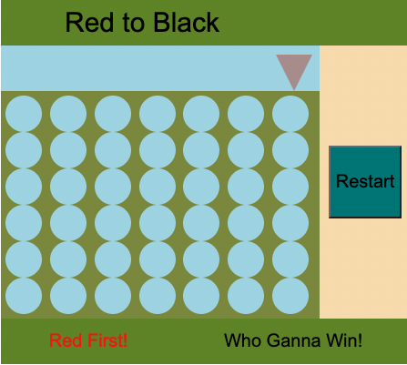

Connect Four

Connect-Four is a tic-tac-toe-like two-player game
- Players alternately place pieces on a vertical board 7 columns across and 6 rows high.
- Each player uses pieces of a particular color.
- The object is to be the first to obtain four pieces in a horizontal, vertical, or diagonal line.
- The board is vertical and pieces inserted in a given column always drop to the lowest unoccupied row of that column.
- As soon as a column contains 6 pieces, it is full and no other piece can be placed in the column.
- Both players begin with 21 identical pieces.
- The first player to achieve a line of four connected pieces wins the game.
- If all 42 men are played and no player has places four pieces in a row, the game is drawn.
Click here or image to Play!